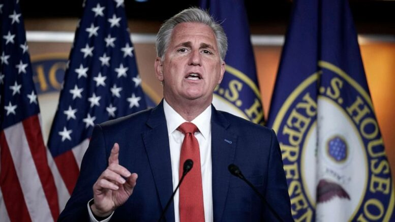

Rep.McCarthy calls out Biden’s lack of bipartisanship
Lack of bipartisanship, lack of brains, lack of morals, lack of following Laws, Lack of the Truth, lack of respect, lack of respect for the unborn, and most of all Lack of God!
Posted On: 2021-04-13T11:52:00
Posted By: Truseeker
Kevin McCarthy is so bi-partisan . ..
Posted On: 2021-04-13T13:38:00
Posted By: Señor Natural (JBmypresident)
This comment was deleted.
We lived in a Constitutional Republic until the last fraudulent election... it has beocme the Banana Republic of American ...land of the corrupt politicians and home of rigged elections and cowardly SCROTUS ‘justices’
Posted On: 2021-04-13T13:57:00
Posted By: Crimea Rivah
Citizen Donald Chump needs a course in government or else he/she would know that the US is a Republic.So I won't give much credence to a person who recites rehetotic as fact.
Posted On: 2021-04-13T17:41:00
Posted By: freethinker
This comment was deleted.
Biden and the CCP cheated
Posted On: 2021-04-13T14:22:00
Posted By: AL Cavallaro
And from the infamous liar and cheater Hairy Reed says, 'We Won Didn't We?'
Posted On: 2021-04-14T17:00:00
Posted By: Michael G.
Sounds like a hot take Al.You should go to the newspapers with that story!
Posted On: 2021-04-14T12:00:00
Posted By: Jeffritoe
Only you lack God here, Moloch.I see you sow your seeds of anger and angst amongst God's godly people.Everything out of your mouth is a lie, Serpent.REPENT AND BE SAVED, SINNER
Posted On: 2021-04-13T12:59:00
Posted By: Trump2020pollsarefake
Who cares what this bootlicker says?He's neutered and irrelevant
Posted On: 2021-04-13T13:40:00
Posted By: Johnny Rossi
Gee, he never griped under Tumpkins when the Dems were told to pack sand.
Posted On: 2021-04-13T12:56:00
Posted By: IconoclastBob
Corporations see right through the Republican smoke screen.Without corporate money, Republicans are done.
Posted On: 2021-04-13T14:05:00
Posted By: Drew P. Balls
Don't complain now, McCarthy!
You should not have allowed Biden's voter fraud.
Posted On: 2021-04-13T13:10:00
Posted By: Hispanics_For_Trump
LOL.... Trump is WEAK if the election was stolen from him.I like my President tough and smart.We elected the right man.
Posted On: 2021-04-13T14:09:00
Posted By: Drew P. Balls
So Biden is 'tough and smart'?Wow!Thanks for the laugh.
Posted On: 2021-04-14T17:00:00
Posted By: KWKid
He stole the White House from Putin.Yep.He is tough
Posted On: 2021-04-15T01:00:00
Posted By: Drew P. Balls
Yes, the coward McCarthy, the right hand man of Paul Ryan, has no credibility, he just likes to whine and make noise, like the leftists.
Posted On: 2021-04-13T13:47:00
Posted By: The Prisoner
I may not have a bipartisan ship, but I've got a super yacht more blow and hoes than you'll ever have.
Posted On: 2021-04-13T11:38:00
Posted By: Job Killer
The GOP Senators should Shut down the Senate before They go for Reconciliation again!
Posted On: 2021-04-13T13:26:00
Posted By: NYSE777
And how would they do that, exactly?
Posted On: 2021-04-13T13:48:00
Posted By: dld
The GOP does not want to work with Biden then calls him out for lack of bipartisanship.Got it.
Posted On: 2021-04-13T11:27:00
Posted By: Mike Pruitt
You got nothing, baby troll except a sore backside taking it there from your dumocrap masters.
Posted On: 2021-04-13T11:33:00
Posted By: Charles
They did the same thing to Obama, vocally stating that their main goal was to make him a one term president.Biden's no fool.He'll give the republicans the opportunity to actually participate in forming legislation (many have forgotten how to after all these years) but if they pull the same stunt they did with Obama, he'll just move on without them.
Posted On: 2021-04-13T14:02:00
Posted By: DoctorHackenbush
Republicans have refused, and stated such, to cooperate so Biden has no choice but to get on and do without them.It takes two to tango and the republicans have been the most obstructionist party in history.Geriatric or Perverts I call them.
Posted On: 2021-04-13T12:37:00
Posted By: Marktwian1000
How about that stock market?
Thank you President Biden
Posted On: 2021-04-13T13:41:00
Posted By: Johnny Rossi
The Stock Market loves Stimulus and Free Money.Cause Inflation, and The Money won't be free anymore.IF the Dollar is not the World Currency, look out below!
Posted On: 2021-04-13T13:43:00
Posted By: NYSE777
How about it.crashing .. hahah once TRUMPS protections are removed it drops.hahahah loser.
Posted On: 2021-04-13T14:29:00
Posted By: Necronn99
TRUMPS protections
lol what?
Posted On: 2021-04-13T14:37:00
Posted By: Trump2020pollsarefake
Typical Republican maneuver, Moscow Mitch says no Republicans will support the Infrastructure plan while other Republicans whine there is NO bi partisanship.Republicans have NO credibility.
Posted On: 2021-04-13T13:58:00
Posted By: SocialDemocraticIsFreedom
Washington – A new Business Roundtable survey of its CEO members found that increases in U.S. domestic and international tax rates would have a negative effect on business expansion, hiring and wage growth, investments in research and development (R) and innovation, and U.S. competitiveness in the global economy.
According to the survey results, 98 percent of CEOs said that an increase in the corporate tax rate from 21 percent to 28 percent would have a 'moderately' to 'very' significant adverse effect on their company’s competitiveness.Seventy-five percent of CEOs said that an increased tax burden on U.S. companies would negatively affect their company’s investments in R and innovation, 71 percent said it would negatively affect their ability to hire, and nearly two-thirds said it would result in slower wage growth for U.S. workers.
An overwhelming majority—88 percent—of respondents agreed that maintaining globally competitive U.S. tax policies is important for business expansion.When asked about an increase in the GILTI rate from 10.5 percent to 21 percent, 76 percent of CEOs reported it would have a 'moderately' to 'very' significant impact on their company’s competitiveness, including plans for U.S. capital spending and hiring.
Posted On: 2021-04-13T13:31:00
Posted By: NYSE777
Wow.A whole group who said they didn't want to pay higher taxes.Who could have seen that coming?
I don't care how much they want to (or need to) admit that they're lousy at their jobs and need bailouts from the Federal Government to eke out success for their investment.
The country needs infrastructure repair and investment and it needs it now.Push, pull or get out of the way.
Posted On: 2021-04-13T13:38:00
Posted By: dld
Define Infrastructure as Roads Trains Airports Ports and 5g /6G , and you have a deal.You are not!You are throwing everything in the Green New Deal into Infrastructure.Spare us your generalities, because the Devil is in the Details.
Posted On: 2021-04-13T13:41:00
Posted By: NYSE777
It's hilarious to get the request 'spare us your generalities' from a poster who put up this:
'The proposed tax increases on job creators would slow America’s recovery and hurt workers,' added Business Roundtable President CEO Joshua Bolten.'This survey tells us that increasing taxes on America’s largest employers would lead to a reduced ability to hire, slower wage growth for workers and reduced investments in research and development—all key components needed for a robust economic recovery.'
A longer string of cliched generality would be hard to construct.
Posted On: 2021-04-13T13:48:00
Posted By: dld
'Prior to the pandemic, the U.S. corporate tax rate drove economic growth, creating 6 million jobs, pushing the unemployment rate to a 50-year low and increasing middle class wages.From 2018 to 2019, major U.S. companies grew their R by 25 percent compared to the two years prior.The current U.S. corporate tax rate has also helped put U.S. businesses on a more level playing field with global competitors and encouraged businesses to invest and grow here in the United States.''The proposed tax increases on job creators would slow America’s recovery and hurt workers,' added Business Roundtable President CEO Joshua Bolten.'This survey tells us that increasing taxes on America’s largest employers would lead to a reduced ability to hire, slower wage growth for workers and reduced investments in research and development—all key components needed for a robust economic recovery.When U.S. companies can compete around the world, they can invest in America and help generate more jobs, pay higher wages and support all of their stakeholders.
Posted On: 2021-04-13T13:39:00
Posted By: NYSE777
Little to no money went into R+D under trump's tax cut.Most of it went into stock buybacks.And as usual, despite those trickle down economists out there, very little went to the average wage earner.
Posted On: 2021-04-13T14:09:00
Posted By: DoctorHackenbush
Any corporation stupid enough to shortchange its R D because of a minor Tax Increase (Biden's proposal leaves 43% of Trump's tax cut to corporations in place) deserves to fail.
Posted On: 2021-04-13T13:43:00
Posted By: dld
So you like Unemployment at 6% or higher, as long as you have a job!
Posted On: 2021-04-13T13:42:00
Posted By: NYSE777
Hasn't happened yet - in response to a tax rate change.Blustering threats of future disaster is a weak argument.
Posted On: 2021-04-13T13:43:00
Posted By: dld
LOL.Asking CEO's if they approve of a tax rate is like asking the Proud Boys if black people should be able to vote.
Posted On: 2021-04-13T14:07:00
Posted By: Drew P. Balls
The Dem's spending spree is only supported by printing billions of dollars, which will drive America into an inflation unlike any seen before.Destroying the value of the dollar is the aim.To weaken Americans fiscally, constitutionally, culturally and collectively is the priority.It's the globalist agenda.
Posted On: 2021-04-13T13:15:00
Posted By: Lou Who
Since we are greatly is debt, your argument must be valid, but it is too honest for the group think know nothing noisemakers to understand.
Posted On: 2021-04-13T13:56:00
Posted By: The Prisoner
You understand.One is better than none!
Posted On: 2021-04-13T15:14:00
Posted By: Lou Who
check out the economics professor over here
Posted On: 2021-04-13T14:38:00
Posted By: Trump2020pollsarefake
Nope.Unlike you sheep who only listen to the left's propaganda activists, politicians and media, I read what many financial experts are saying.
Posted On: 2021-04-13T15:10:00
Posted By: Lou Who
The economy has been supported by printing dollars for twenty years with no inflation.Powell has stated that when inflation is established he will raise interest rates from there present day historic lows.Inflation talk is right wing fear mongering.
Posted On: 2021-04-13T14:01:00
Posted By: SocialDemocraticIsFreedom
SocialDemocraticIsFreedom is not only an oxymoron, it's extremely poor English.How telling.
Posted On: 2021-04-13T15:12:00
Posted By: Lou Who
'Rep.McCarthy calls out Biden’s lack of bipartisanship...'
Bipartisanship isn't Joe's problem, cognitive ability is.
He should call out Susan Rice and Obama who are at the controls...
Posted On: 2021-04-13T11:45:00
Posted By: Senator Blutarsky

Content Date: n/a
Download Date: 2021-04-16
Document ID: L0C04A103